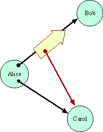
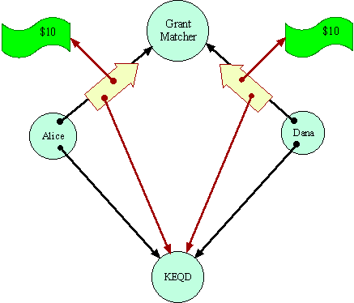
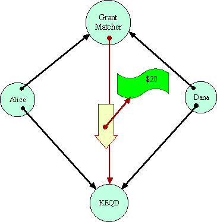
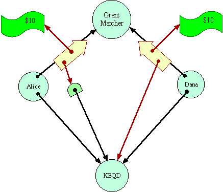
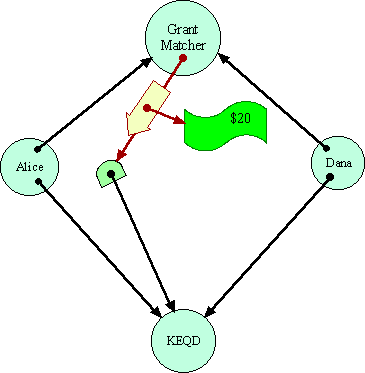
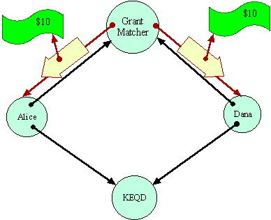

| |
The
Grant Matcher |
||||||
Many systems designers have wrestled with the notion of object identity. The issues must be resolved to design foundational equality primitives. Should an object system provide a means to tell whether two object references refer to the same object, without consulting either of the objects involved? Following Lisp, we call any such primitive EQ. Pure capability systems that are otherwise equivalent have come to different answers. The implications of these different answers were not understood until the Grant Matcher Puzzle.
Capability Foundations
- The first rule of capabilities is that one object, here, Bob, can only get a access to another object, here, Carol, if the first is creates the second (not shown), or if someone, here, Alice, who validly has access to the Carol voluntarily passes a copy of this access to Bob. In order for Alice to give Bob access to Carol, Alice must already have access to Carol, and Alice must choose to give out this access. What does it mean for code to voluntarily choose? After all, the code may even execute deterministically, so some definitions of free will wouldn't work. By voluntary we mean: Were a different program substituted for Alice, but placed in the same exact external environment, that program would be able to choose not to give access to Carol. This is the basis for discretionary security in capability systems.
- The second rule is that capabilities may only travel on paths provided by existing capabilities. In order for Alice to give Bob access to Carol, Alice also requires access to Bob. Even if Alice is coded to attempt to give this access to Bob, she cannot if there is no capability pathway of willing intermediaries leading from Alice to Bob. This is the basis for mandatory security in capability systems, especially confinement.
- The third rule is that the access to Carol that Bob gets must be as good a reference to Carol as the reference Alice passed as far as Alice is concerned. The "Carol" that Bob gets must be the "Carol" that Alice meant.
The subtleties in making this last issue precise are the heart of the Grant Matcher Puzzle. Matching Distributed Grants.explains how to avoid the capability equivalent of a man in the middle attack, otherwise a danger in a distributed cryptographic capability system.
Setting up the Puzzle
In the initial conditions of Grant Matcher Puzzle, the Grant Matcher itself plays the role of Bob, and a charity named KEQD plays the role of Carol. Dana's situation is exactly symmetric with Alice. Alice and Dana are both assumed to trust the Grant Matcher to perform its duties.
Their only protection against misbehavior by the Grant Matcher is the principle of least authority (called by Saltzer and Shroeder the principle of least priviledge). The Grant Matcher's protocol only requires Alice and Dana to give the Grant Matcher those capabilities it would require to honestly perform its duties. A protocol requiring more authority than this should raise eyebrows. In the context of the Grant Matcher Puzzle as posed, Alice and Bob are vulnerable to the misbehavior possible within these bounds, about which we will not concern ourselves further.
Money is itself an interesting problem, but should simply be assumed for this puzzle. Here is an implementation of money adequate for this example, given that we assume that the Grant Matcher itself already has prior knowledge of the currency being used by Alice and Dana.
Alice and Dana are assumed not to trust each other at all. That is why they are using the Grant Matcher as a mutually trusted third party. No system can enable cooperation in the absence of any trust. The Grant Matcher pattern, however, is supposed to bring about a particular kind of cooperation between Alice and Dana, requiring only that they both trust the Grant Matcher and a common monetary system.
When it Works
The Grant Matcher is assumed to be coded to perform its duties if it is possible for it to do so. The puzzle is: Can the Grant Matcher determine if Alice and Dana are designating the same destination? Having made a determination, can the Grant Matcher reliably transport the money to the destination, in a way mutually acceptable to Alice and Dana? The Grant Matcher must operate so as to ensure that Alice will not lose $10 unless a destination acceptable to her gets $20. Similarly for Dana.
Let us assume there is no EQ primitive--that one can only gain information about a capability by sending messages over it. In that case, the Grant Matcher has to determine equality by sending messages over these capabilities in some equality determining protocol. Having determined--somehow--that both references are equivalent, the Grant Matcher can simply pick one and send the money.
Alice Gets Greedy
So, in a system in which forwarders can truly be transparent, Alice can send to the Grant Matcher instead a reference to a transparent forwarder to KEQD. This forwarder always transparently sends messages through to KEQD, unless those messages carry $20. In that latter circumstance, the forwarder will deposit the money to Alice's bank account. By assumption, the Grant Matcher cannot distinguish this situation from the earlier one, except at the price of the very $20 that is at stake.
Notice that Alice cannot really be said to have done anything dishonest. The cause that she is designating to the Grant Matcher is simply one that acts just like KEQD, except for where it puts $20 bills. If Dana were to designate this same forwarder object in its request to the Grant Matcher, it would be stating that this object is where it would like to see the money go as well.
Since Alice's object is forwarding messages to KEQD, including the messages that make up the equality protocol, the intermediate object could validly also be seen as part of the plumbing--as a message conduit for delivering messages to KEQD. In this sense, KEQD itself would also be a valid interpretation of what Alice meant by the capability she passed to the Grant Matcher. Were the Grant Matcher to give $20 directly to KEQD instead of her forwarder, Alice would have no grounds for complaint.
However, the Grant Matcher's situation is completely symmetrical, so it might still break the symmetry in Alice's favor, in which case Alice pockets the money. Dana has lost his $10 even though no destination acceptable to Dana got $20. By no stretch of semantics could one interpret Dana's actions so as to say that Alice's bank account was a valid interpretation of the destination Dana meant to designate.
How EQ Makes a Difference
Here is an address-equality-based Grant Matcher.
-
The following code implements the Grant Matcher as a single object.
More complicated uses of the same basic pattern might make it a two
facetted object--one each for Alice and Dana. Joule, KeyKOS, and Mach
provide for multiple facets primitively. Marc Stiegler explains
how to implement multiple facets in languages such as Java or E using
the Facade pattern.
| Charity.java | Interface to those, like KEQD, that can accept a donation. | |||||||
| GrantStatus.java | Interface for callbacks to be provided by Alice and Dana in their GrantMatcher requests so they can find out the status of their request, and receive a refund if needed. | |||||||
| GrantMatcher.java | If everything goes well, The Grant Matcher accepts two messages, escrows the money from each, sees that they agree, gives the sum to the common charity, and lets both sides know the transaction completed. Otherwise, it refunds any money escrowed, and lets both sides know the transaction failed. This class is abstract, leaving subclasses to decide how to determine equality. | |||||||
|
||||||||
| MalletCharity.java | An Charity-in-the-middle that forwards all equality messages to the Charity it is trying to impersonate, while pocketing all donations. |
Unless stated otherwise, all text on this page which is either unattributed or by Mark S. Miller is hereby placed in the public domain.
| |
|
report bug (including invalid html)
|
||||||||